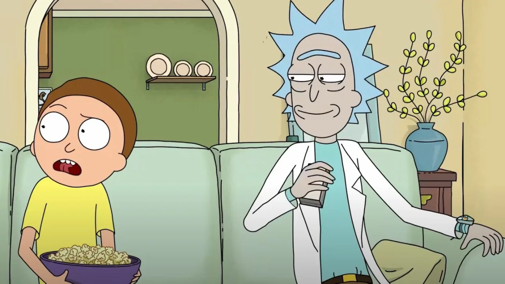
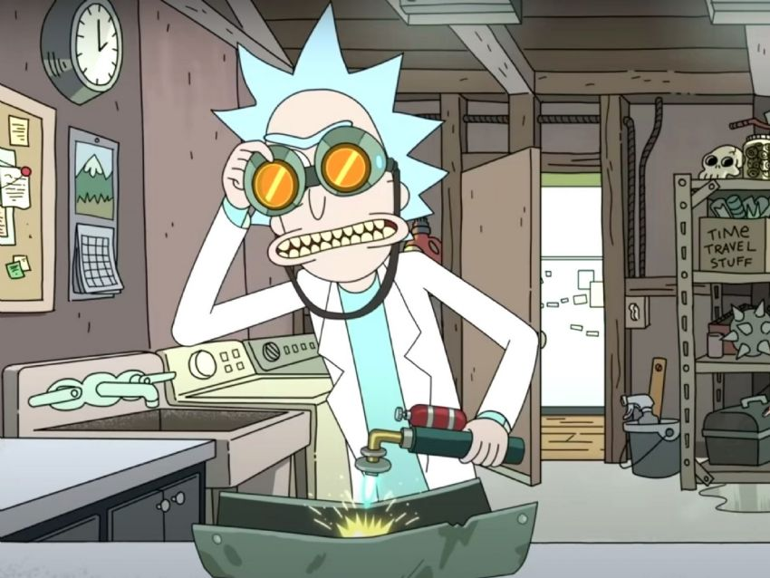

3 CARACTERÍSTICAS PERSONALES DE RICK SANCHEZ 1ª. Me encantan las aventuras, explorar mundos, nuevas galaxias, liarla en otros planetas, en fin, todo lo que sea arriesgado fuera de la tierra. 2ª. Soy muy cabezón, todo tiene que ser a mi manera, y todo lo que diga tendré la razón, por mucho que la gente piensa que tiene razón, yo voy por encima. 3ª. Siempre que hablo, tengo que eructar al menos una vez, si no no me siento persona.

2 COSAS QUE NO DEJARÍA DE HACER NUNCA:
Lo primero que no dejaría de hacer nunca es salir de aventuras con mi nieto Morty,
lo hacemos todos los días, y no podría dejar de hacerlo.
[Es el de la foto]
 Otra cosa la cual, tampoco dejaría de hacer, es avanzar cientificamente, con esto me refiero a hacer experimentos, crear nuevos inventos, experimentar con otras razas, y todo desde mi laboratorio en el garaje.

APLICACIÓN WEB QUE MAS USO
La aplicación web que mas utilizo actualmente es twitter,
de hecho en el pie de página de esta web, tenéis mi twitter.
Lo uso para subir twits sobre la serie y también para reirme de lo estúpida que es la gente por twitter.